WORK・新聞媒體
針對數位新聞閱聽人，以使用者體驗出發，替 TVBS 新聞網規劃符合當前數位使用習慣的產品，實現真實、信賴、科技的核心價值。
合作對象
TVBS
專案時間
2023
製作時程
2週
專案類型
APP
負責內容
分析研究、UX規劃、UI設計
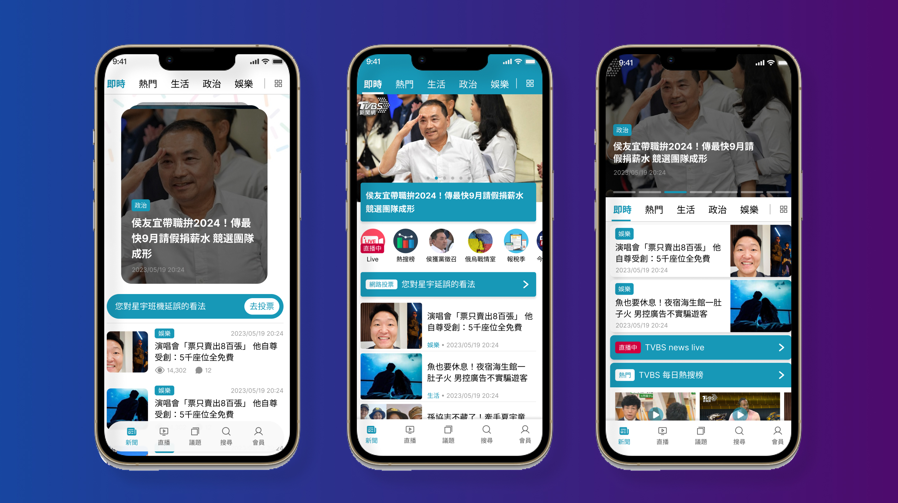
首頁改版三方案介面總覽。
成果與結論
本專案展現在有限時間內聚焦產品重點。透過系統化盤點易用性議題與定義核心用戶輪廓，收斂出能在短時間內顯著提升體驗的三大優化方向，並產出具體且可執行性的提案，加速團隊溝通與後續開發對齊。
項
易用性議題盤點
種
用戶輪廓定義
項
核心優化方向
本專案重點
基於設計思考與用戶數據脈絡，本專案優先聚焦高影響力、可快速執行的關鍵項目——重構視覺層級與推出自定義頻道。以最有效率的方式優化產品體驗，為 TVBS 新聞閱聽人打造流暢且個人化的全新觀看感受。
本專案設計流程
本專案設計流程涵蓋「前期研析」、「痛點收斂與排序」至「概念發散與介面實作」，將研究數據層層轉化為具體的產品落地方案。
TA輪廓：援引電視收視與 App 使用行為研究，推論用戶輪廓。
易用性議題：任務導向可用性測試，記錄 33 項具體議題。
整合訪談洞察，具體化為三位代表性人物側寫。
定位首頁與內容頁的情緒缺口與服務落差。
依 IPA 缺口排序，鎖定三大核心優化方向。
針對三大方向發散並收斂具體介面解法。
產出可供產品與工程團隊討論的高保真介面提案。
研究與分析
觀眾分析指出，年輕單身、工作者及高齡者分別對應輕中重度用戶；使用頻次則以每日 1-2 次為大宗。
由於缺乏 TVBS 新聞網自身的用戶行為數據，本階段先援引兩份外部資料，交叉比對推論當前數位新聞閱聽人可能的輪廓與使用慣性，作為後續 TA 分群與 Persona 建構的起點依據。
＊以下為示意資料
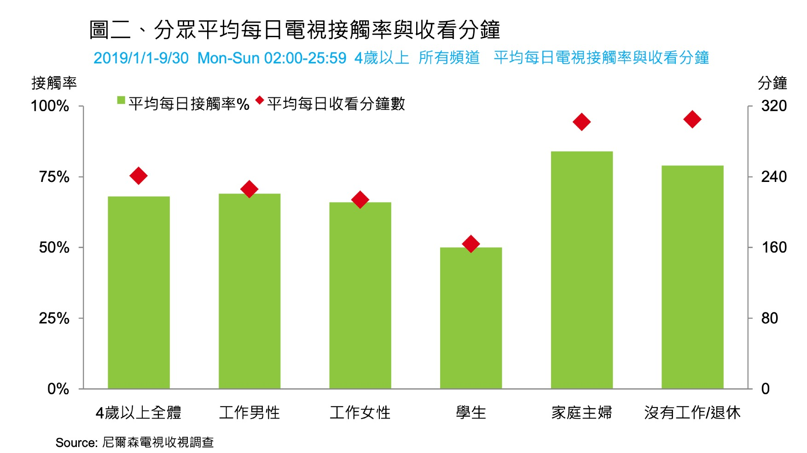
輕度觀眾單身且年輕，中度觀眾工作者多，重度觀眾老齡化
從年齡分層的角度來看，輕度觀眾最年輕，35歲以下的觀眾佔一半以上，55歲以上的比例明顯低於電視整體；中度觀眾的情況與台灣人口結構相似，以25-54歲為主；重度觀眾受眾明顯是老年結構，55歲以上的佔一半以上，其中65歲以上的比例遠遠高於電視整體。
圖二、分眾平均每日電視接觸率與收看分鐘（2019/1/1–9/30，Mon–Sun 02:00–25:59，4歲以上，所有頻道，平均每日電視接觸率與收看分鐘）
資料來源：Nielsen Corporation
雖然電視收視數據與行動新聞 App 的使用情境不完全相同，但兩者同屬新聞內容消費行為，加上目前尚未追蹤TVBS 新聞網用戶資料，因此先將電視觀眾的年齡結構作為初步的年齡分佈參考，再透過另一份行動新聞 App 使用行為研究，補齊「使用頻次」與「單次停留時間」兩項數位情境專屬的行為指標，讓輪廓推論更貼近實際的 App 使用場景。
平均一日使用次數
| 選項 | 樣本數 | 百分比 |
|---|---|---|
| 1. 一次 | 73 | 22.26% |
| 2. 兩次 | 73 | 22.26% |
| 3. 三次 | 55 | 16.77% |
| 4. 四次 | 14 | 4.27% |
| 5. 四次以上 | 29 | 8.84% |
| 6. 不是每天使用，約2~3天使用一次 | 43 | 13.11% |
| 7. 不是每天使用，約4~5天使用一次 | 11 | 3.35% |
| 8. 不是每天使用，約一週使用一次 | 5 | 1.52% |
| 9. 不是每天使用，約一週以上使用一次 | 25 | 7.62% |
資料來源：《行動新聞App使用者行為意圖研究》李巧勻
平均一日使用時間
| 選項 | 樣本數 | 百分比 |
|---|---|---|
| 1. 未滿五分鐘 | 59 | 17.99% |
| 2. 五分鐘（含）以上，未滿十分鐘 | 81 | 24.70% |
| 3. 十分鐘（含）以上，未滿十五分鐘 | 73 | 22.26% |
| 4. 十五分鐘（含）以上，未滿半小時 | 68 | 20.73% |
| 5. 半小時（含）以上，未滿四十五分鐘 | 31 | 9.45% |
| 6. 四十五分鐘（含），未滿一小時 | 8 | 2.44% |
| 7. 一小時以上 | 8 | 2.44% |
資料來源：《行動新聞App使用者行為意圖研究》李巧勻
綜合兩份資料可以發現，多數用戶集中在「一日 1~2 次、單次 5~15 分鐘」的中頻使用區間，高頻與長時間使用皆屬少數。將此使用頻次分布，與電視觀眾的年齡結構交叉對照後，即可初步推論：低頻的年輕單身族群、中頻的職場工作者，以及高頻的中高齡族群，可能各自代表不同的使用情境與需求。
訂立目標
產品指標眾多，本次目標為提升既有用戶的參與行為，因此先處理產品既有問題，作為後續拉新、用戶留存的優化基石。
指標樹狀結構
HMW 我們如何……
提升用戶開啟意願
減少用戶找新聞的時間
減少用戶閱讀時的中斷點
提升用戶與新聞的互動
更精準推播用戶想看的新聞
提升中、重度用戶比例
拉抬TVBS其他相關產品
不只提供即時新聞
更是友善且值得信賴的數位新聞服務
HMW…
我們如何提高用戶在TVBS新聞網的參與程度，
提升用戶對產品的認同感，
創造友善、個人化的數位閱讀環境，
進而願意再次開啟TVBS新聞網。
設定目標族群
延續前述年齡與頻次交叉推論，本階段將用戶設定為「被動漫遊型」、「主動接收型」、「互動發表型」，以此作為篩選訪談對象的依據。
低頻的被動漫遊型多為年輕單身族群，較少主動開啟新聞 APP，資訊多來自社群平台的被動接觸；中頻的主動接收型則以職場工作者為主，會在通勤等固定時段主動開啟 APP 瀏覽；高頻的互動發表型則集中在中高齡族群，除了頻繁開啟 APP，也更傾向針對新聞議題發表意見與互動。三種輪廓將分別找到對應受訪者，進行下一節更深入的易用性訪談。
25 歲以下
1 次／2~3 日
平均使用 5 分鐘
25~55 歲以下
1~2 次／1 日
平均使用 10~15 分鐘
55 歲以上
3 次／1 日
平均使用 15~30 分鐘
資料來源：《有線電視新聞頻道觀眾接收分析》朱全斌、《行動新聞App使用者行為意圖研究》李巧勻
訪談與探索易用性議題
以可用性測試搭配情境訪談，共記錄 33 項易用性議題，涵蓋新聞、內頁、直播、搜尋、會員與共用元件六大範疇。
邀請 3 位分別對應輕、中、重度使用頻次的受訪者，在行動裝置上實際執行「尋找特定新聞」、「切換頻道」、「延伸閱讀」等真實任務，同步採用放聲思考法記錄操作過程中的猶豫與誤觸，並在事後訪談中追問操作當下的期待與困惑，藉此探索用戶動機、需求與期待。
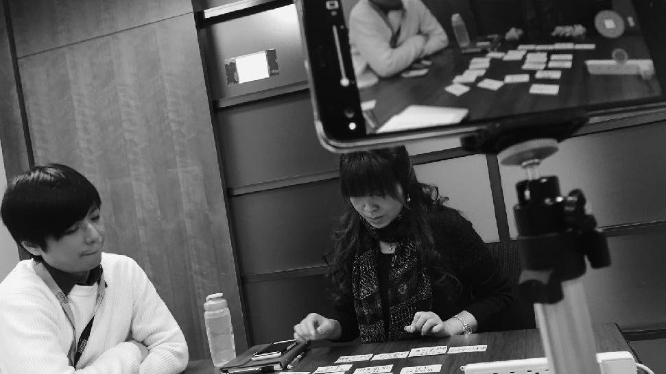
將訪談中觀察到的操作困難逐一記錄，依「頁面位置」歸類後，再標註議題類型（UI、UX、架構、動效）與對應的易用性指標（如介面一致、操作引導、避免錯誤等），方便後續依嚴重程度與影響範圍排序優化順序。
| 頁面位置 | 編號 | 議題 | 類型 | 指標 |
|---|---|---|---|---|
| 新聞 | 1_1 | landing page 的視覺與整體產品調性不統一 | UI | 介面一致 |
| 1_2 | 若用戶關注的議題在 tab 最後，必須滑到很後面才可點擊 | UX | 操作引導 | |
| 1_3 | 主題新聞的 icon 過大，導致整體 APP 看起來不細緻 | UI | 介面一致 | |
| 1_4 | live 與每日熱搜的區塊像是一般的新聞，用戶無法分辨 | UI | 介面理解 | |
| 1_5 | live 與每日熱搜的標籤沒有對齊 | UI | 介面一致 | |
| 1_6 | 新聞、AD、推薦功能的大小不一，看起來較為混亂 | UI | 介面一致 | |
| 1_7 | 下方區塊類別在分類上不明確，如「全球」類別下直接接「政治」新聞，但沒有標題做出區隔 | 架構 | 簡易學習 | |
| 1_8 | 廣告圖若還沒出現，需要以流沙做呈現 | 動效 | 介面理解 | |
| 1_9 | 配圖、內文、日期的間距不一致 | UI | 介面一致 | |
| 1_10 | 上方 tab 切換時，live 與每日熱搜重複出現，用戶無法分辨首頁與次頁的差異 | UX | 介面理解 | |
| 1_11 | 下方 Maintab 的 icon 調性不一致 | UI | 介面一致 | |
| 內頁 | 2_1 | 下方 Maintab 不該隨著點擊而轉換，應將進階功能重新安排位置 | UI | 介面理解 |
| 2_2 | 內文區跳出的時機需要重新定義，忽然跳出會導致用戶困擾 | UX | 介面理解 | |
| 2_3 | 內文各區塊的間距需要重新調整 | UI | 介面理解 | |
| 2_4 | 更多新聞、新聞標籤、更新時間等資訊需要重新編排位置與呈現形式 | UI | 簡易學習 | |
| 2_5 | 「延伸閱讀」、「你可能會喜歡」、「人氣點榜」的推薦規則用戶不清楚 | UX | 介面理解 | |
| 2_6 | 「複製」的語意不明確，用戶以為是複製文字，結果是複製連結 | UX | 避免錯誤 | |
| 2_7 | 點擊「字級」後，沒有意識到下方是範例，位置與樣式需要重新調整 | 架構 | 介面理解 | |
| 2_8 | 點擊內文後，上方沒有意識到下方需要重新調整 | UI | 操作便利 | |
| 2_9 | 內文中插入「更多新聞」，會誤使用戶的閱讀節奏被打亂 | UX | 操作便利 | |
| 直播 | 3_1 | 點擊「查看直播」結果是開啟新頁，用戶須點擊一次才可觀賞直播，屬於多餘的頁面 | UX | 介面理解 |
| 3_2 | 直播標題重複出現「#最新看TVBS【LIVE】」，屬於重複的資訊 | UX | 介面理解 | |
| 3_3 | 用戶期待點擊「議題」後是看到不同主題的分類，不適合使用當前條列的形式 | UX | 介面理解 | |
| 搜尋 | 4_1 | 頁面的編排方式與整體 APP 不相符 | UI | 介面一致 |
| 4_2 | 無法客製化自己要的內容 | UX | 客製化功能 | |
| 4_3 | 過去輸入的內容，已經清空但跳頁後仍持續出現 | UX | 避免錯誤 | |
| 會員 | 5_1 | 本頁中的排版、樣式與 APP 的形式不一致 | UI | 架構理解 |
| 5_2 | 註冊、登入為重要的 CTA，上方的呈現不明顯 | 架構 | 操作引導 | |
| 5_3 | 「會員」中的「特別致謝」連結失效 | UX | 避免錯誤 | |
| 5_4 | 本頁不需要下滑更新的動作 | UI | 介面一致 | |
| 5_5 | 「關於」的項目需要盤點結構、目的並考量是否要移除 | UX | 介面理解 | |
| 共用 | 6_1 | 本 APP 中的 AD 樣式需要重新盤點，討論一致性的可能 | UI | 介面一致 |
| 6_2 | 本 APP 使用的 icon、字體樣式不一致 | UI | 介面一致 |
33 項議題中，「新聞首頁」與「內頁」合計占比超過六成，顯示用戶在瀏覽與閱讀的核心情境中遭遇最多阻礙，這也直接呼應了後續優化方向以首頁與內容頁為核心戰場的判斷。
收斂痛點
具象化用戶輪廓與定義痛點、目標
整合訪談與觀察，收斂出 3 種代表性使用者輪廓，作為設計執行的基準。
鄭小方
24 歲
重視瀏覽功能
「我只想滑手機的時候順便看看有什麼新鮮事，太複雜的介面會讓我直接滑走。」
⏱ 使用頻率
1次／2~3日
⏳ 停留時間
5分鐘／次
關注議題
曾阿凱
34 歲
重視檢索功能
「我通勤時間有限，只想快速看完在意的那幾則新聞，其他干擾我完全不需要。」
⏱ 使用頻率
1~2次／1日
⏳ 停留時間
10~15分鐘／次
關注議題
王大日
58 歲
重視互動功能
「看新聞是我每天的日常，看到不認同的報導，我一定要留言講兩句。」
⏱ 使用頻率
3次／1日
⏳ 停留時間
15~30分鐘／次
關注議題
＊ hover 卡片可展開查看完整痛點與目標
三位 Persona 雖然開啟頻次與停留時間具有差異，卻共同指向同一個核心期待——更快速瀏覽資訊、避免中斷閱讀體驗。這也再次驗證了前述「新聞首頁」與「內容頁」作為優化戰場的判斷，是本次改版中最大的用戶需求。
顧客旅程地圖
透過顧客旅程地圖收斂易用性議題（P0），並搭配 IPA 評估服務缺口，以規劃其餘項目的優化優先順序。
| 選擇媒體 使用前 |
開啟首頁 使用中 |
選擇報導 | 閱讀內文 | 進階動作 | 延伸閱讀 | 其他延伸 使用後 |
|
|---|---|---|---|---|---|---|---|
| 目標 | 找到適合自己的媒體 | 能快速理解版面介面、看起來條理分明、第一眼吸引人 | 被動：標題／圖片吸引人。主動：快速搜尋目標新聞、辨識出未讀的新聞 | 順暢讀完報導、能有舒適的閱讀體驗 | 能收藏感興趣的報導、能針對議題發表心情、留言、意見 | 得到更多相關的資訊 | 找得到收藏的地方 |
| 痛點 | 不知道選擇哪家媒體 | 難以理解首頁畫面、點擊後不是期待的頁面 | 無法訂閱想關注的頻道、無法在列表時快速分別出新聞類別 | 不斷被其他資訊干擾閱讀 | 無法收藏報導、無法與他人互動、無法針對新聞發表心情 | 延伸閱讀出現的時機無法理解 | 無法針對產品做更多動作，可控性低、不知道成為會員的動機為何 |
| 情緒曲線 | 🙂 | 😠 | 😐 | 😠 | 😠 | 😐 | 😐 |
| IPA | 8 | 5 | 8 | 6.7 | 3.6 | 1 |
三大優化方向
根據前述分析，本APP核心體驗集中於「首頁」與「內容頁」。因此本次優化將先聚焦在此兩大關鍵場景，預期透過視覺精緻化、個人化自定義，以及深度引導閱讀三大設計策略，優化介面與操作體驗。
現況與問題
首頁在有限的螢幕空間內堆疊過多資訊層級，導致視覺主從不明；且問題多與「一致性」與「資訊有效運用」相關，是本次改版優先處理的基礎課題。
頻道分類為產品重要架構，建議固定不要變動，減少用戶瞭解產品架構的學習時間。
整體間距、對齊、大小階需要調整，增強整體細緻度，也凸現畫面中的主次關係。
輪播的畫面中，圖片與文字的搭配使文字不宜閱讀，用戶需要更認真的閱讀文字，造成負擔。
此處留過多空白，導致首頁在第一屏給人散亂的感覺。
此區塊為常駐的重點功能，目前版本像是直接嵌入畫面中，沒有考量視覺一致性。
首頁報導列表中可提供分類標籤，協助用戶快速分辨該新聞是否是自己感興趣的。
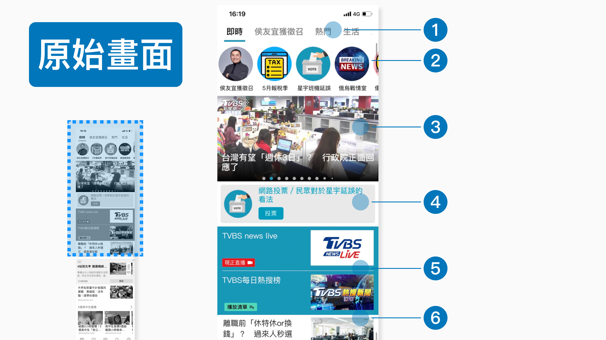
設計目標
提供結構分明的新首頁佈局，先優化通用性的易用性議題，提升產品的易讀性與操作體驗。
Goal 1
◆
對齊、間距、大小、留白，圖文比例安排，視覺、元件一致性。
Goal 2
◆
新聞列表加入類別標籤，自定義頻道功能，未來版面擴充性。
Goal 3
◆
強調第一屏的畫面重點，圖文搭配時的辨識度，聚焦在報導本身。
方案發想
提出三款首頁新方案，皆包含前述所提之優化重點，藉此創造團隊討論空間。
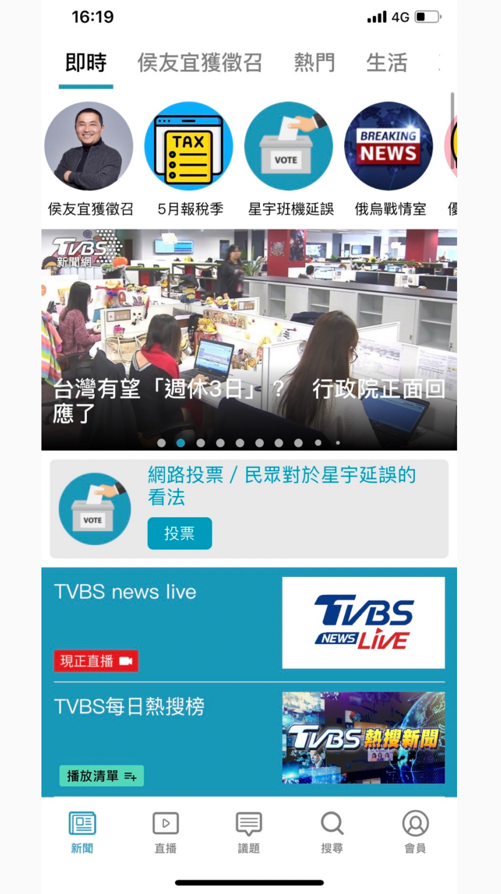
目前上線版本，作為比較基準。
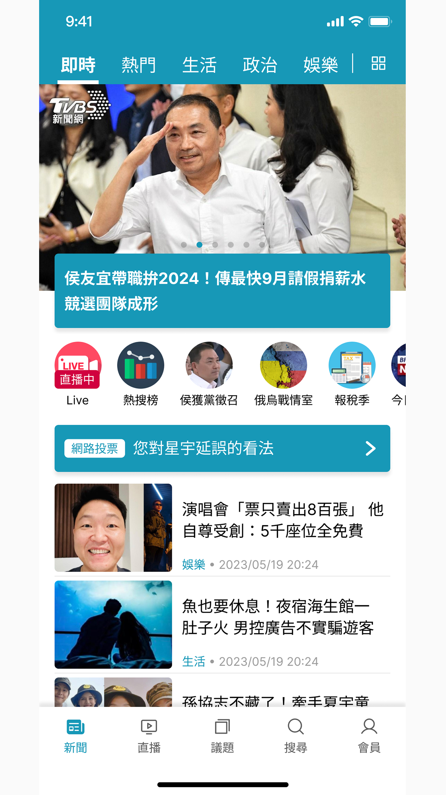
以原有 APP 為基礎，在既有的架構下進行重新拉皮，開發成本較低。
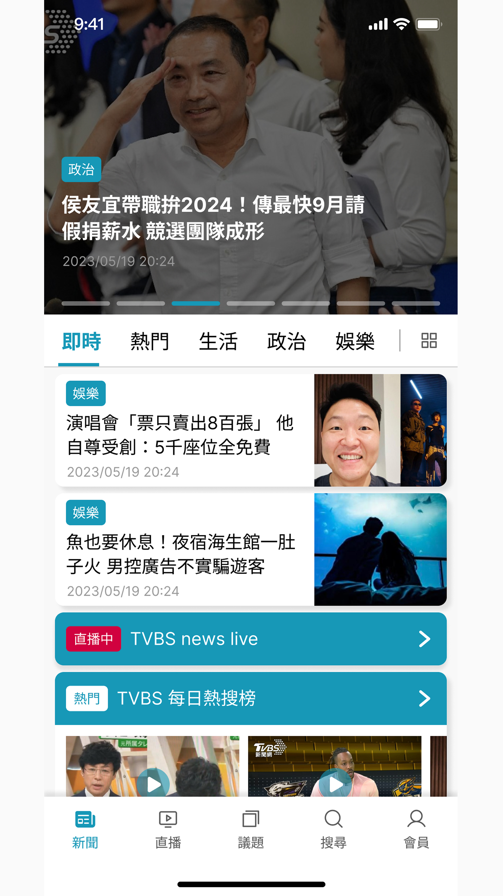
透過卡片式設計提高未來擴充性，並將原首頁上方的圓形 TAB 收整在底部「議題」中。
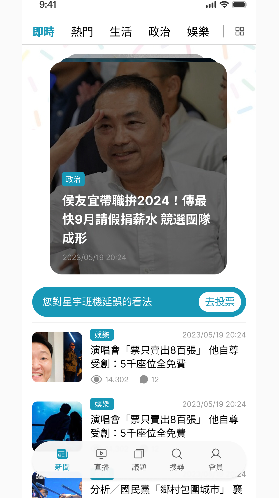
以「每日必知新聞」的形式增加用戶與 APP 的互動性。
方案一
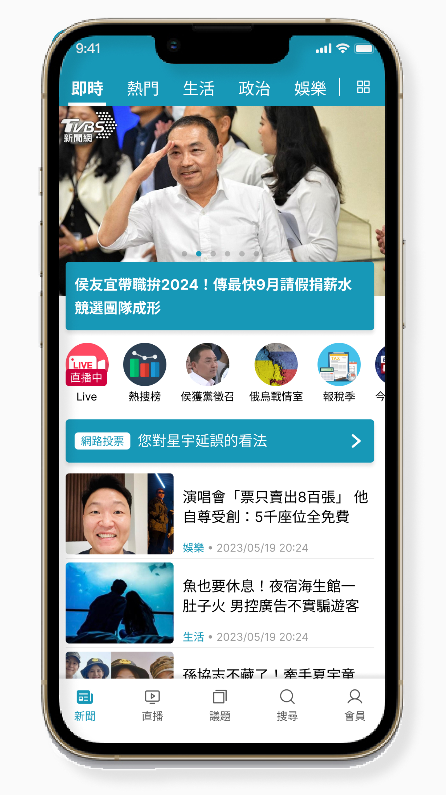
整理首頁相關視覺元件，帶入一致性的標準色，且調整間距、對齊、大小，使整體產品在第一印象上更為整齊、有重點。
收整常駐的 Live 與熱搜榜至議題 TAB，利用主圖區分頻道與議題，保留更多的空間給新聞報導，以符合用戶希望「看新聞」的期待。
提供更多的資訊，協助用戶在選擇報導時能有更多的依據，加速閱覽時的效率。
重新調整 CTA 形式，讓 CTA 可延續使用，確保服務在具備一致性的前提下產生不同變化。
方案二
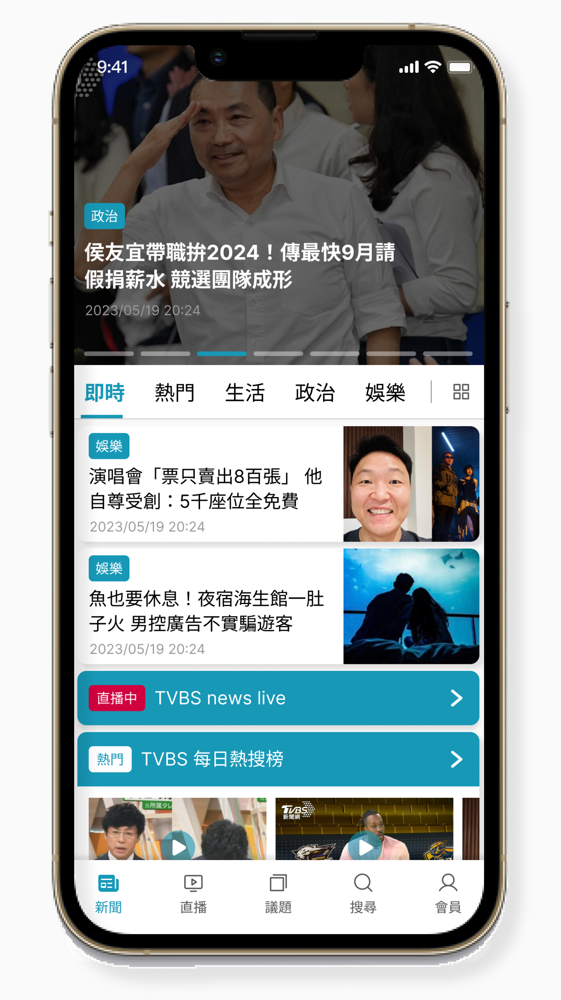
利用大圖與文字的搭配，呈現出具質感的新聞媒體氛圍，因疊黑色透明的關係，降低不同品質照片的影響，用戶也能更聚焦在內容資訊本身。
藉由卡片式設計保留未來新內容、功能加入時的擴充性，亦強化了不同主題的區塊感，用戶能明確的辨識出各區塊的主題與內容。
利用標籤的加入，幫助用戶在資訊量較多的首頁快速理出重點，也因為具備一致性，可幫助用戶更選擇希望看的新聞。
用戶在首頁即可看到今日熱搜排名內容，亦可以直接點擊觀看新聞，減少一層，減少用戶探索的時間。
方案三
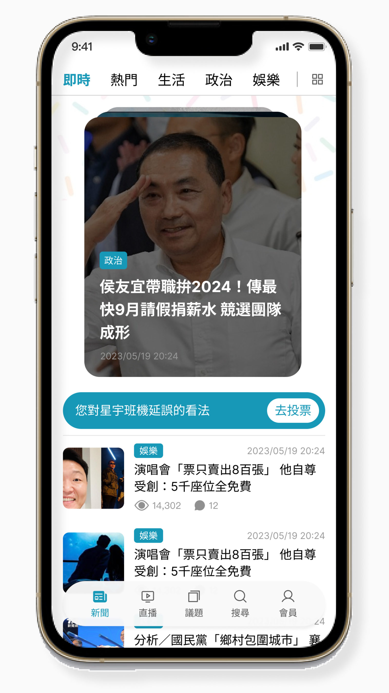
以「每日必知新聞」的形式增加用戶與 APP 的互動性，用戶可藉由手勢滑動，快速篩選出想看的今日新聞，篩選後的新聞也不會出現，幫助用戶管理新聞。
本版因強調互動性，視覺上將採用較多的圓角，使產品調性偏向輕鬆友善，營造不同的即時新聞氛圍。
加入已讀數與留言數，引導用戶與報導進行互動，增加用戶參與感，在本產品中進行更多操作。
下方 Main Tab 採用浮動的形式，當用戶下滑閱覽時消失，往回滑或停止 3 秒時出現，增加互動性的同時也讓閱讀空間更大。
現況與問題
當前頻道眾多，且每位用戶關注的議題不同，導致用戶在查找目標頻道時需要花費較多時間。
尤其對於僅有特定關注議題的中、高頻用戶而言，缺乏個人化的頻道管理機制，等同於每次開啟 APP 都要重新篩選一次資訊，長期下來將削弱使用效率與黏著度。
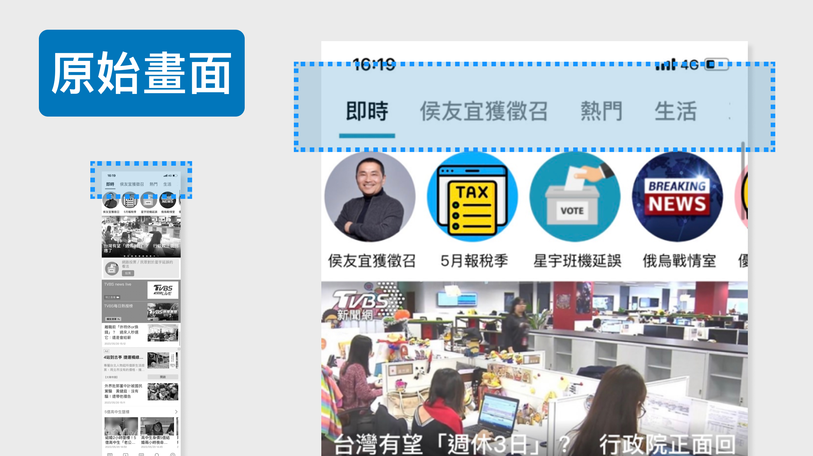
設計目標
Goal 1
◆
用戶可依照自己需求，設定頁籤與推播設定，打造符合自己習慣的新聞 APP。提升用戶的操作性與客製化目的，進而提升產品黏著度。
Goal 2
◆
用戶可藉由本頁總覽本產品的所有頻道，並可直接點擊進入目標頻道，提升操作效率。
佐證資料
藉由競品發現「頻道管理」為即時新聞服務標配，表現的形式大同小異，不過對於年長用戶來說可能不好操作。
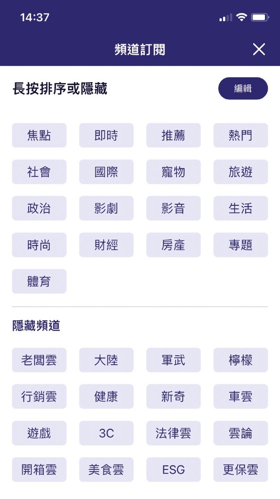
東森新聞雲
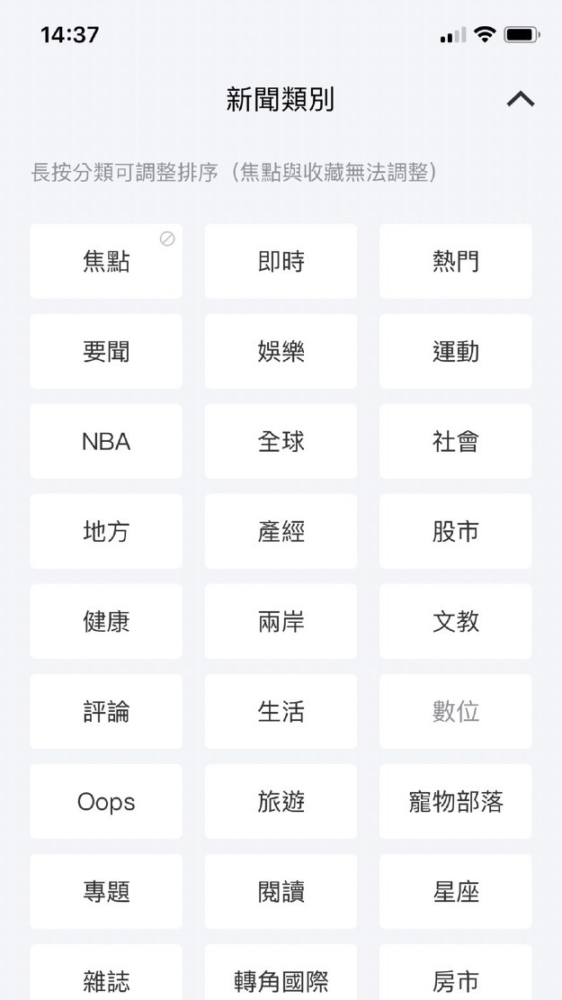
und News
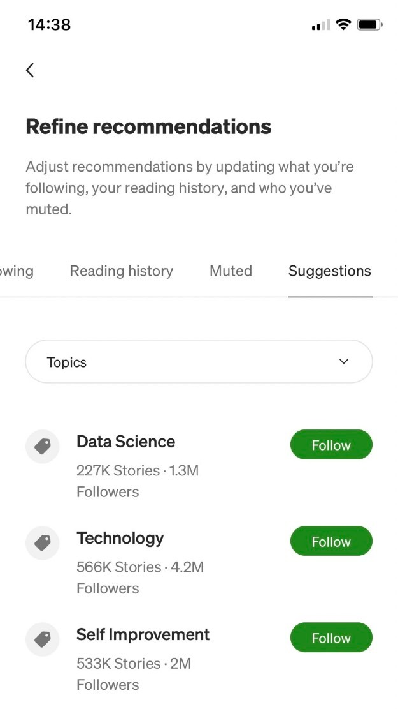
Medium
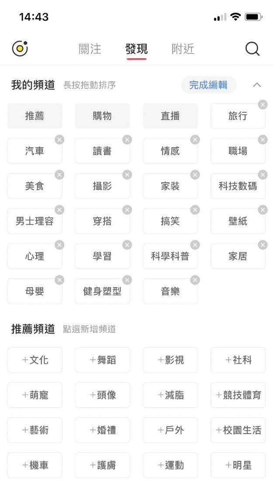
小紅書
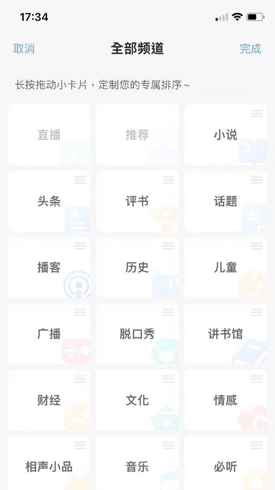
蜻蜓FM
概念解法
針對自定義頻道提出兩款方案：方案一以卡片式列表換取更大的觸控範圍，方案二則貼近多數競品的慣用形式，換取更精簡的頁面空間。
＊兩款方案的差異在於「操作範圍」與「學習成本」的取捨。
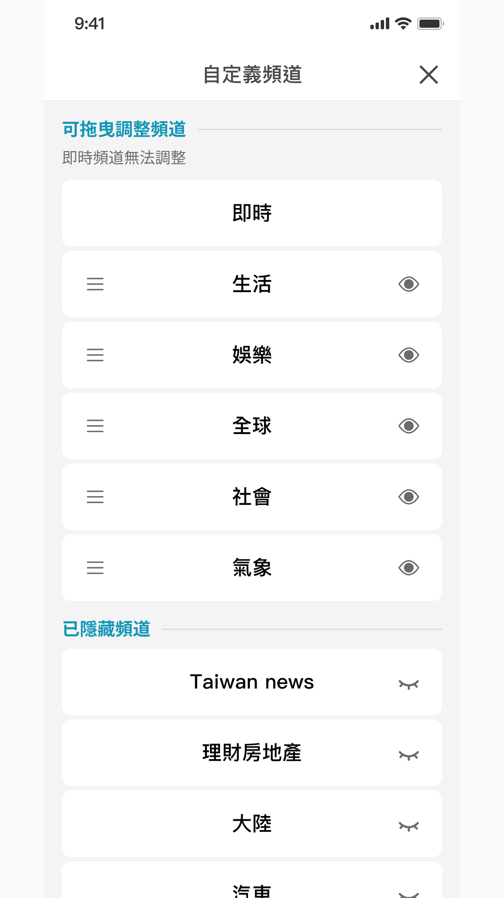
優｜操作範圍大，不易誤觸
缺｜所需頁面空間較大
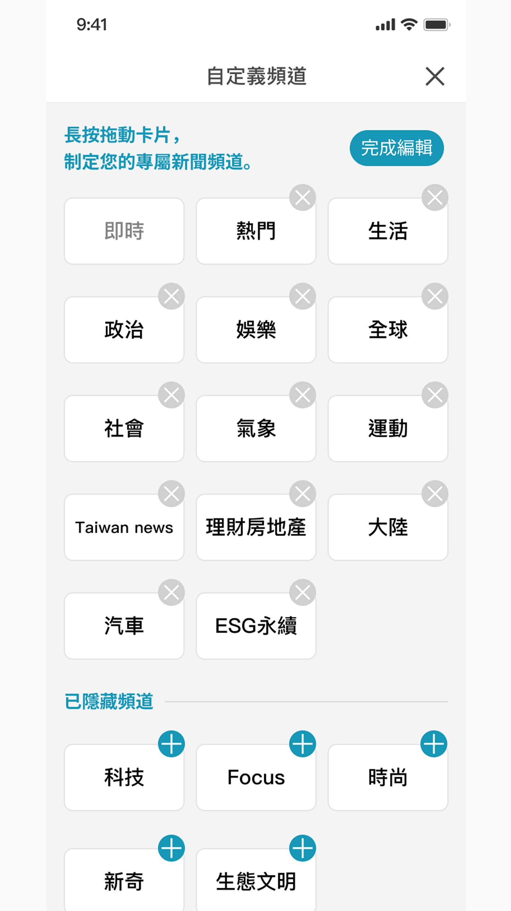
優｜競品常見的形式，所需空間較小
缺｜需要學習操作，容易誤觸
現況與問題
以單屏瀏覽空間的角度，還有可釋出的空間。以整體的角度，排版因資訊主從不分明、廣告插入形式等綜合影響，導致全篇報導中斷點過多，用戶難以閱讀完全文。
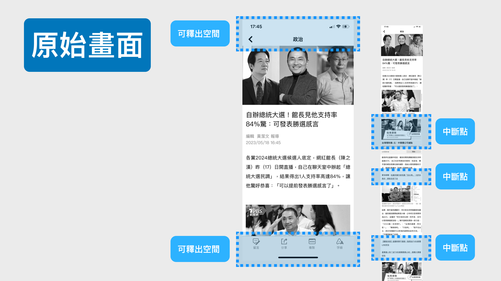
設計目標
Goal 1
◆
調整報導內文的配置，使各區塊所呈現的資訊與內容分明，用戶無需判斷自己現在在哪、看到哪一部份、是否尚未閱讀完的想法出現。
Goal 2
◆
增加瀏覽時的閱讀區塊，讓用戶可以聚焦在閱讀的本身，降低被其他行為干擾的情況。
概念解法
解法圍繞「釋放閱讀空間」與「降低中斷點」兩個方向展開：前半段聚焦頂部功能收整與內文層次重整，後半段則處理廣告、標籤與延伸閱讀等次要資訊的定位。
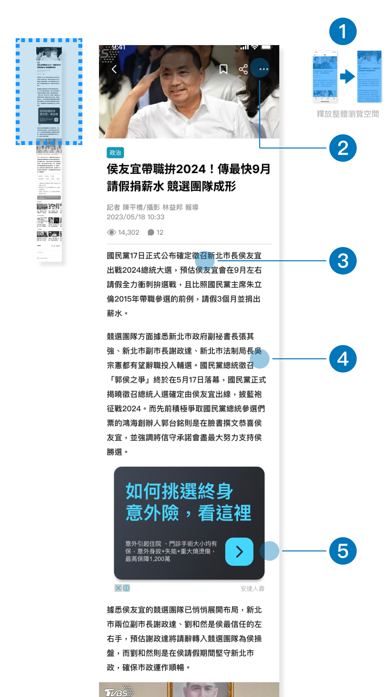
將原有功能收納，增加閱讀空間。
螢幕下滑時 Fix 在頂部，讓用戶可隨時操作。
統整相同的資訊，使新聞相關資訊清晰有結構，並新增已讀數與留言數，增加此新聞的互動感。
利用間距明確區分出各區塊的界線，避免發生用戶已經以為閱讀完畢，其實報導尚未結束。
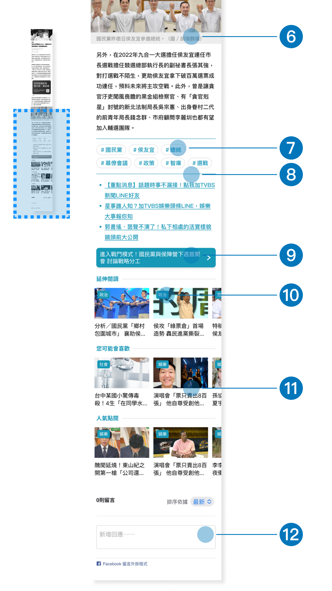
使內文圖片與廣告圖得以更明確的區分。（目前使用東森新聞雲的樣式）
採用全版圖片明確呈現新聞照片。
帶入產品識別色，增加視覺一致性。
以明確的視覺元件提示報導已結束，接下來為延伸閱讀。
藉由明確的「下一篇」指引，讓用戶無需接收更多資訊，直接閱讀下一篇相關報導。
利用藉由標準色統整內文的視覺風格，使整體看起來具一致性。
收整目前需不斷下滑的延伸閱讀區塊，用戶可在一屏中更快速的得到更多新聞推薦，避免所推薦的文章用戶不喜歡卻又要一直往下滑，亦讓文章在閱讀節奏上有不同變化。
留言規劃在報導最下方，用戶可點擊頂部留言按鈕快速挑轉；無需換頁即可看留言，初期可使用 facebook 外掛留言，未來若自家開發留言系統可讓留言與互動的成效更完善。
待確認議題
重點畫面總覽
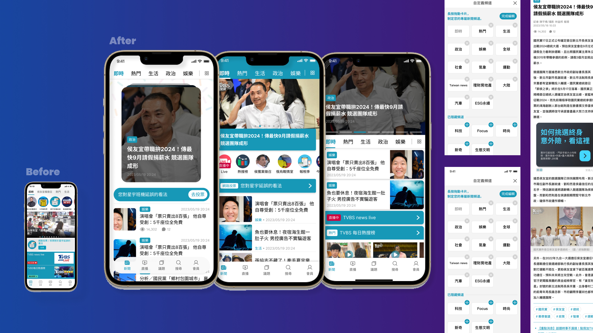
設計心得與反思
本提案目前仍停留在介面設計與內部溝通階段，尚未進入開發與上線驗證。回顧從研究到設計的完整脈絡，貫徹 TVBS 核心價值與公司願景的過程中，也淬煉出三個對數位新聞產品具有普遍意義的設計原則。
Truth
◆
透過與產品互動，讓閱聽人得以參與報導，不再是被動接收資訊，加強閱聽人與 TVBS 新聞的連結。
Trust
◆
滿足閱聽人需求，逐步建立認同感，進而強化對於 TVBS 的信賴感。
Technology
◆
將最新科技應用在傳統媒體，並以可感受的形式傳達給閱聽人。